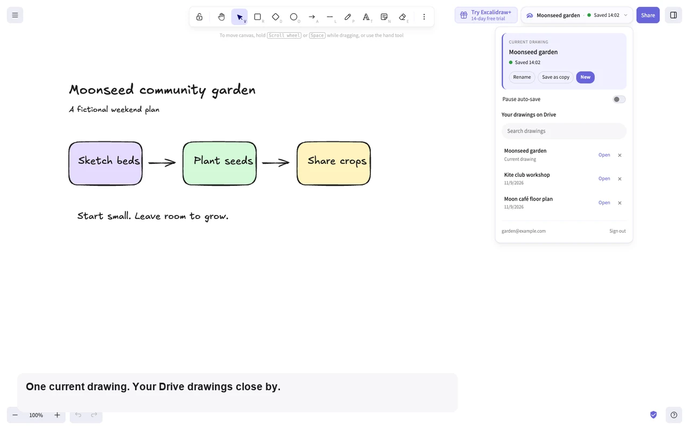
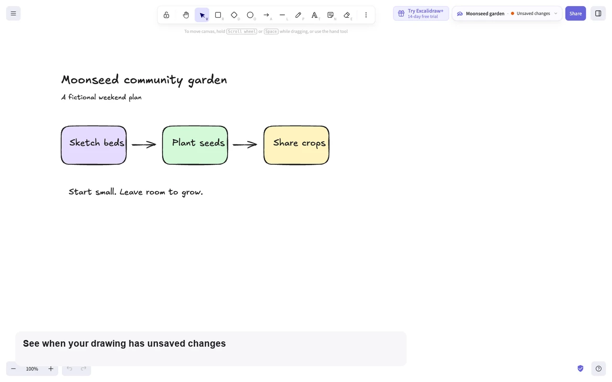
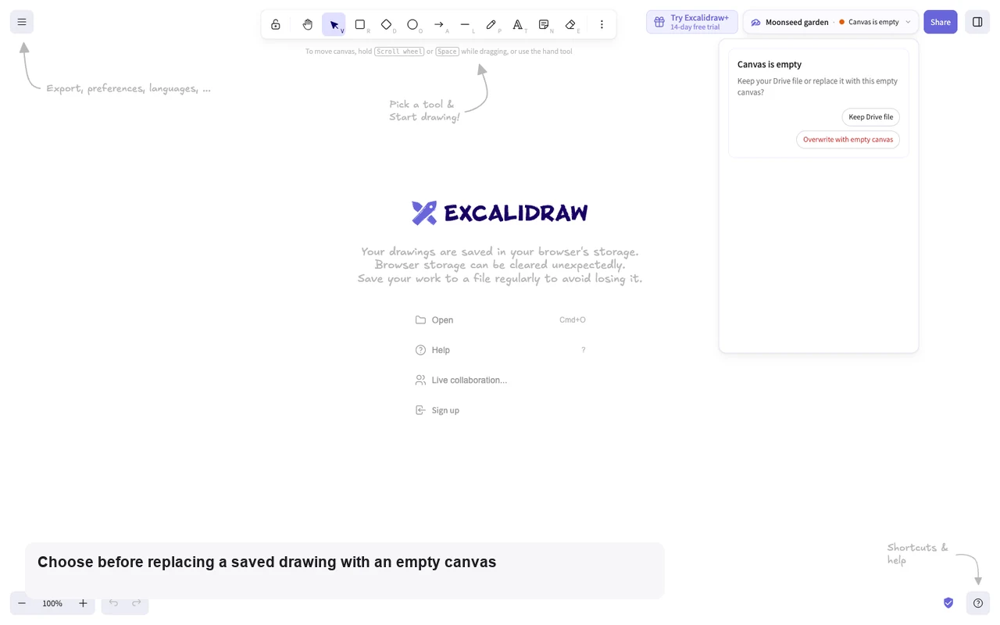
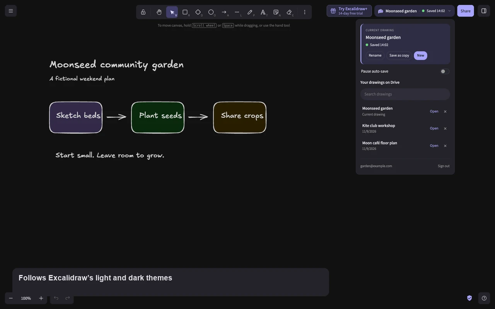
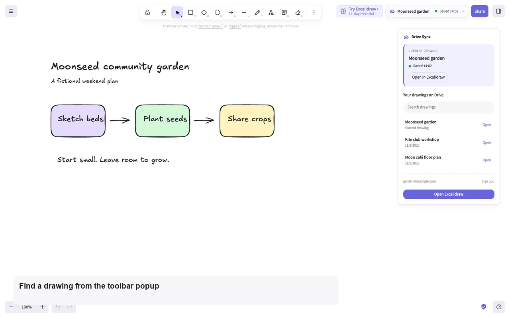

Add the extension
Install from the Chrome Web Store, then open excalidraw.com. Reload if it was already open.
A little less saving. A little more sketching.
Keep your Excalidraw drawings in your own Google Drive. A quiet little companion that saves as you draw, and helps you find your ideas again.
1.2.0 is rolling out on the Chrome Web Store
Room for your next idea.
Right where you draw
Everything lives beside Share on excalidraw.com.
No new workspace to learn.

Three small steps
Install from the Chrome Web Store, then open excalidraw.com. Reload if it was already open.
Open the pill beside Share and choose Sign in with Google. Your drawings go to your Excalidraw Projects folder.
Auto-save starts on. Give your drawing a name, watch its status, and let your ideas take shape.
A reassuring little check-in
The pill shows the current drawing’s name
and a plain-language save state.

Rename keeps the same file. Save as copy gives an idea a fresh branch, with its own file.
Changes save after a short pause, at most once a minute. Unchanged drawings don’t create extra versions. You can pause auto-save.
A pause when it matters
New and Open save your current drawing first, even with auto-save paused. An empty canvas or edits made elsewhere get a gentle question before you choose what to keep.

Soft around the edges

Soft violet surfaces, small controls, and a sketched pen-and-cloud mark. Your canvas stays the main event.

Find a drawing in the searchable Drive list, or return to your current one from the compact toolbar popup.
Your ideas. Your Drive.
Drawings travel directly to Google. Access is limited to files created by or authorized for this extension, with no developer server, ads or analytics.
Read the full privacy policyDesign sketches, study notes, project plans. Keep them somewhere you can find them.